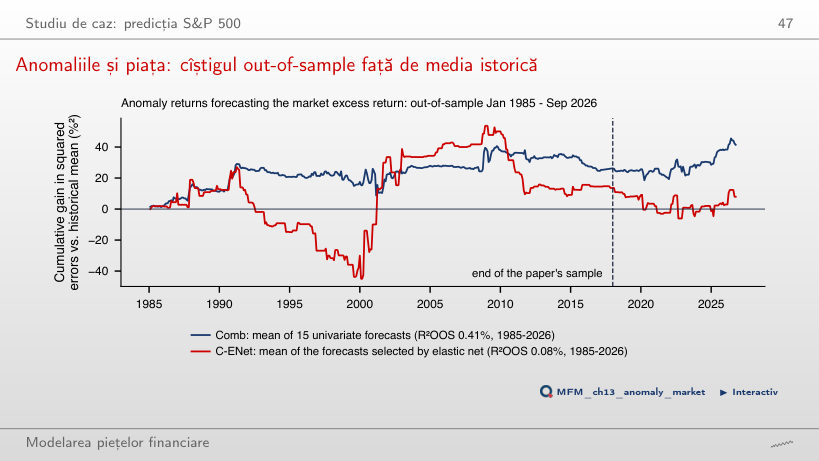

În stînga este slide-ul din curs, în dreapta aceeași figură, calculată în browser din aceleași date. Butonul ▶ modifică parametrul pas cu pas.
Ce poate prezice machine learning în finanțe? · Trusa minimă de machine learning · Caracteristici: diferențierea fracționară și capcana ei · Etichete: ce învață, de fapt, modelul · Validare onestă · Studiu de caz: predicția S&P 500 · Selecție și overfitting-ul backtest-ului · Machine learning pentru inferență · Frontiera cercetării: structura înaintea flexibilității
Ce poate prezice machine learning în finanțe?
Predictibilitatea direcției și a riscului

Răspuns
Pentru |r_t|, autocorelația este 0,29 la lagul 1 și 0,16 la lagul 40; toate cele 40 ies din banda ±0,024. La randamente, autocorelația de ordinul 1 este −0,10, iar 13 din 40 ies din bandă. Autocorelația liniară redusă nu implică independență, iar aplicarea modulului nu transformă ACF prin simpla ridicare la pătrat. Rezultatul indică persistența amplitudinii randamentelor. Banda ±0,024 este un reper punctual i.i.d., nu o bandă simultană robustă la heteroscedasticitate.
Trusa minimă de machine learning
Traiectoria de regularizare LASSO

Răspuns
Prima caracteristică este ffd_price. vol_20 are cel mai mare coeficient în valoare absolută la penalizare slabă, ceea ce nu stabilește ordinea intrării. Nici autocorelația de ordinul 1 a randamentelor nu stabilește această ordine. Filtrul FFD trunchiat păstrează o componentă proporțională cu nivelul log-prețului. Intrarea timpurie nu dovedește abilitate predictivă: AUC mediu în CV cu purjare, cu scalarea estimată în fiecare pliu, este între 0,476 și 0,486 pentru penalizările cu cel puțin un coeficient nenul.
Caracteristici: diferențierea fracționară și capcana ei
Statistica ADF în funcție de d: S&P 500

Răspuns
ADF cu un lag respinge: −2,96 < −2,86. Cu 34 de laguri alese prin AIC, statistica este −0,72 și nu respinge. Niciun verdict nu este o demonstrație. Argumentul structural este că, pentru un log-preț I(1), filtrul finit cu suma ponderilor 0,178 păstrează componenta I(1). Corelația 0,98 cu log-prețul este un semnal de alarmă, nu un test de staționaritate.
Etichete: ce învață, de fapt, modelul
Trei bariere: S&P 500 în 2022

Răspuns
Evenimentul se încheie în ziua 5 și primește +1. Mișcarea ulterioară nu schimbă eticheta. Semnul randamentului la orizont se folosește numai dacă nu a fost atinsă anterior nicio barieră orizontală; nu există o regulă de anulare a semnelor. Pe grafic, doar evenimentul din martie atinge bariera de profit; cele din mai, august și noiembrie primesc +1 prin semnul randamentului la bariera verticală, iar cel din ianuarie atinge stop-loss-ul (−1).
Validare onestă
K-fold cu purjare și embargo

Răspuns
Se elimină 2h + e = 15 observații: h = 6 înainte de bloc, ale căror etichete se termină în test, și h + e = 9 după el, adică 6 purjate și 3 sub embargo. Valoarea 13 actualizează numai frontiera din stînga; valoarea 12 omite embargoul. Cele 20 de observații de test nu intră în acest total.
Experiment de leakage: o țintă fără predictibilitate

Răspuns
La h = 20, zilele vecine au etichete suprapuse și caracteristici similare. Amestecarea le distribuie între antrenare și test. Dezechilibrul claselor nu explică diferența dintre evaluări pe aceleași observații, iar repetarea împărțirii nu înlătură acest mecanism. Pliurile contigue dau 50,0%, iar purjarea și embargoul 49,6%; aceste valori sînt rezultate ale simulării, nu garanții exacte. Cu h = 2, K-fold amestecat dă 49,9%; cu h = 60 ajunge la 84,5%.
Studiu de caz: predicția S&P 500
Compararea modelelor: mediile pe pliuri

Răspuns
Nu. Regula „mereu în sus” are 58,1%, deci logit-ul are cu aproximativ 0,4 puncte procentuale mai puțin decît reperul. Depășirea nivelului de 50% sau clasarea înaintea celorlalte trei modele nu demonstrează depășirea acestui reper. Predicția „sus” în 98,3% din zile (TP = 3 575, FP = 2 589) arată apropierea de regula majoritară; nu dovedește că modelul reproduce exact această regulă. AUC-urile medii pe pliuri sînt între 0,477 și 0,508.
Backtest walk-forward: rezultate

Răspuns
Nu. Invarianța raportului Sharpe la scalare se referă la înmulțirea tuturor randamentelor cu aceeași constantă pozitivă. O poziție care alternează între 0 și 1 nu este o astfel de scalare. În exemplu, cu tranzacția la închiderea următoare, la pragul 0,5 și costul de 5 bp, strategia are SR 0,33, iar buy-and-hold 0,66. Diferența, −0,33, are p = 0,001 (test HAC Ledoit–Wolf). Log-prețul FFD folosește d = 0,15, ales doar pe datele pînă în 2009.
Anomaliile și piața: cîștigul out-of-sample față de media istorică

Răspuns
Comb este media prognozelor univariate: contribuția fiecărei pante univariate este ponderată cu 1/15. Nu este OLS multivariat împărțit la 15. Combinarea poate reduce varianța erorilor, fără a garanta un cîștig. Multicoliniaritatea nu produce singură bias OLS. În acest eșantion, Comb are R²OOS 0,41%, față de −7,41% pentru OLS; semnificația cîștigului Comb este sensibilă la lagurile HAC (p unilateral Clark–West 0,045 cu 5 laguri, 0,063 cu 3 laguri). În lucrare, cu 100 de anomalii, OLS ajunge la −2 513,86%, iar combinația simplă la 0,89%.
Selecție și overfitting-ul backtest-ului
Cea mai bună dintre N strategii fără abilitate

Răspuns
Aproximativ 1,45: aproximarea teoretică dă 1,46, iar media celor 200 de simulări este 1,43. Zero este media unei strategii individuale; 0,45 = √(1/5) este abaterea sa standard aproximativă. Maximul unei realizări variază de la un eșantion la altul. Valoarea crește cu N și scade cu lungimea eșantionului.
In-sample (IS) și out-of-sample (OOS): căutare pe grilă pe Bitcoin

Răspuns
Regula MA 11/20, cu bandă 0%, are SR out-of-sample 0,03. Valorile 0,50 și 0,41 descriu mediane ale unor grupuri (cele mai bune 10% reguli in-sample, respectiv toate regulile), nu performanța acestei reguli. Corelația de rang Spearman dintre SR in-sample și out-of-sample este 0,13. Scăderea este compatibilă cu overfitting; comparația cu buy-and-hold cere o evaluare separată.
Machine learning pentru inferență
Exemplu rezolvat: puterea predictivă a VIX pentru randamentele S&P 500

Răspuns
La 4 laguri HAC, intervalul selecției duble, [−22,1; 40,8] bp, este de aproximativ 1,8 ori mai larg. Cele 15 controale selectate pentru log VIX reduc variația acestuia rămasă după control, ceea ce poate mări eroarea standard. Metodele folosesc același eșantion, iar ambele intervale au corecție HAC. Mărimea coeficientului nu determină proporțional lățimea intervalului. Intervalul [−22,1; 40,8] bp nu separă coeficientul predictiv de zero la nivelul de 5%.
Frontiera cercetării: structura înaintea flexibilității
Deep learning în evaluarea activelor: rapoarte Sharpe out-of-sample

Răspuns
FF5 are SR lunar 0,22, cu interval aproximativ de 95% [0,11; 0,34]. Pagina folosește eroarea standard √((1 + SR²/2)/T), sub aproximarea i.i.d. Normală. Valorile 0,75 și 0,15 aparțin GAN din lucrare, respectiv pieței din replicare. În lucrare, EN are 0,50 și FFN 0,44: modelul liniar regularizat depășește această rețea de prognoză în comparația raportată, fără a demonstra o regulă universală despre structură și flexibilitate.
S&P 500 și VIX: închideri zilnice, ianuarie 2000 – septembrie 2026; Bitcoin: închideri zilnice din septembrie 2014; prețuri EODHD. Factorii Fama–French: Kenneth French Data Library. Rapoartele Sharpe ale modelelor SDF: Chen, Pelger și Zhu (2024), Tabelul I și Tabelul A.VI. Anomaliile long-short (factori și diferențe de decile): Kenneth French Data Library; R²OOS din lucrare: Dong, Li, Rapach și Zhou (2022), Tabelul 2.